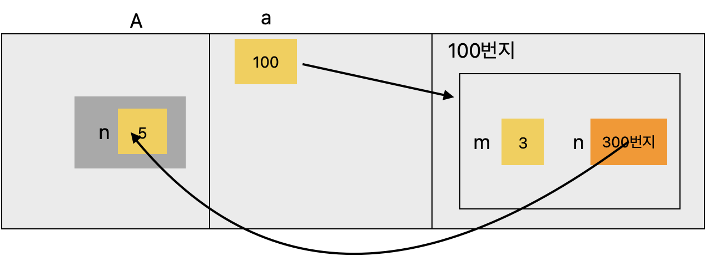
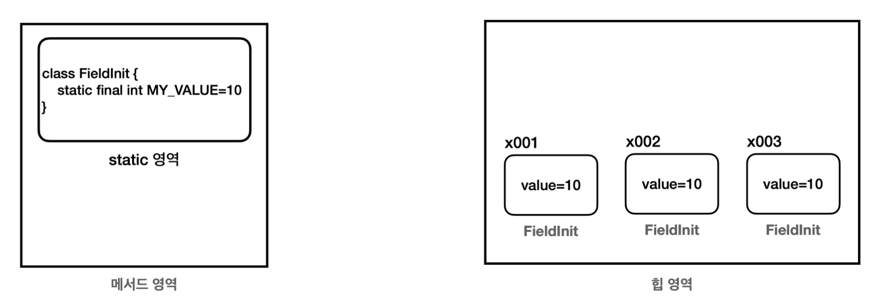

static 과 final
static 변수와 static 메서드 그리고 final에 대해서 알아보자
static
- 인스턴스를 생성하지 않고 바로 붕어빵 틀을 불러 오는 것.
- class에있는 메서드를 바로 호출 할 수 있다.
💡 static 변수
💡 static 메서드
💡 정적(static) 초기화 블록
- 일반적으로 인스턴스 필드의 초기화는 객체가 만들어지는 시점에 이뤄진다.
- 반면 static(정적) 필드는 생성자가 호출되지 않은 상태에서도 초기화 할 수 있어야 한다.
- 생성자를 통해 객체가 생성되기 전이 이미 사용할 수 있는 상태이어야 한다. 또한, 생성자에서는 정적필드를 초기화 할 수 없다.
- 정적 초기화 블록
- 클래스가 로딩될 때 가장 먼저 실행됨
🍀 생성자보다 먼저 호출 되는지 확인하는 예제
package kr.co.review.pack6;
class A {
int a;
static int b;
static {
b=5; // 정적 필드의 초기화
System.out.println("클래스 A가 로딩했습니다");
}
A() {
a = 3; // 인스턴스 필드 초기화
}
}
public class StaticInitBlockTest {
public static void main(String[] args) {
System.out.println(A.b);
}
}
🌸 static 메서드 vs instance 메서드
클래스 메서드, static 메서드
- 객체 생성 불필요
- 클래스 명으로 바로 접근할 수 있다
- 클래스명 + . + 메서드명
-
메서드 앞에도
static을 붙일 수 있다. 이것을정적 메서드또는클래스 메서드라 한다. 정적 메서드라는 용어는static이 정적이라는 뜻이기 때문이고, 클래스 메서드라는 용어는 인스턴스 생성 없이 마치 클래스에 있는 메서드를 바로 호출하는 것 처럼 느껴지기 때문이다.
public class StaticFieldTest { static class A { int m = 3; static int n = 5; } public static void main(String[] args) { A a1 = new A(); A a2 = new A(); // 인스턴스 필드 a1.m = 5; a2.m = 6; System.out.println(a1.m); // 5 System.out.println(a2.m); // 6 // 정적 필드 a1.n = 7; a1.n = 8; System.out.println(a1.n); // 8 System.out.println(a2.n); // 8 A.n = 9; System.out.println(a1.n); // 9 System.out.println(a2.n); // 9 } }
인스턴스 메서드
static이 붙지 않은 메서드는 인스턴스를 생성해야 호출할 수 있다. 이것을인스턴스 메서드라 한다.
public class DecoUtil1 {
public String deco(String str) {
String result = "*" + str + "*";
return result;
} }
public class DecoMain1 {
public static void main(String[] args) {
String s = "hello java";
DecoUtil1 utils = new DecoUtil1();
String deco = utils.deco(s);
System.out.println("before: " + s); // before: hello java
System.out.println("after: " + deco); // after: *hello java*
}
}
💡 static 응용(싱글톤 패턴)
-
싱글톤 패턴 (Singleton Pattern)
- 프로그램에서 인스턴스가 단 한 개만 생성되어야 하는 경우에 사용하는 디자인 패턴
-
싱글톤 패턴 구현
- 생성자는 private으로 선언
- 클래스 내부에 유일한 private 인스턴스 생성
- 외부에서 유일한 인스턴스를 참조할 수 있는 메서드 생성
💡 final
- final의 값은 최초 한번만 할당 가능하다
- .
final을 지역 변수 선언시 바로 초기화 한 경우 이미 값이 할당되었기 때문에 값을 할당할 수 없다. - 매개변수에
final이 붙으면 메서드 내부에서 매개변수의 값을 변경할 수 없다. 따라서 메서드 호출 시점에 사용 된 값이 끝까지 사용된다.
- .
public class FinalLocalMain {
public static void main(String[] args) { //final 지역 변수1
final int data1;
data1 = 10; //최초 한번만 할당 가능 //data1 = 20; //컴파일 오류
//final 지역 변수2
final int data2 = 10; //data2 = 20; //컴파일 오류
method(10);
}
//final 매개변수
static void method(final int parameter) {
//parameter = 20; 컴파일 오류
}
}
💡 final 필드 - 생성자 초기화 vs 필드 초기화 차이
public class FinalFieldMain {
public static void main(String[] args) {
//final 필드 - 생성자 초기화
System.out.println("생성자 초기화");
ConstructInit constructInit1 = new ConstructInit(10);
ConstructInit constructInit2 = new ConstructInit(20);
System.out.println(constructInit1.value);
System.out.println(constructInit2.value);
//final 필드 - 필드 초기화
System.out.println("필드 초기화");
FieldInit fieldInit1 = new FieldInit();
FieldInit fieldInit2 = new FieldInit();
FieldInit fieldInit3 = new FieldInit();
System.out.println(fieldInit1.value);
System.out.println(fieldInit2.value);
System.out.println(fieldInit3.value);
//상수
System.out.println("상수");
System.out.println(FieldInit.CONST_VALUE);
}
}
필드 초기화
FieldInit과 같이final필드를 필드에서 초기화 하는 경우, 모든 인스턴스가 다음 오른쪽 그림과 같이 같 은 값을 가진다.- 모든 인스턴스가 같은 값을 사용하기 때문에 메모리가 낭비된다.
- 이를 보완하기 위해 나온 것이 static final
- 
🌸 static final
FieldInit.MY_VALUE는static영역에 존재한다. 그리고final키워드를 사용해서 초기화 값이 변하지 않는다.static영역은 단 하나만 존재하는 영역이다.MY_VALUE변수는 JVM 상에서 하나만 존재하므로 앞서 설명 한 중복과 메모리 비효율 문제를 모두 해결할 수 있다.- 이런 이유로 필드에
final+ 필드 초기화를 사용하는 경우static을 붙여서 사용하는 것이 효과적이다. - 상수(constant)라고 불린다.
💡 상수(constant)
- 변하지 않고 항상 일정한 값을 갖는 수 = 단 하나만 존재하는 변하지 않는 고정된 값.
- 필드에 직접 접근해서 사용한다.
- 대문자 사용, _로 구분한다.
- 상수는 런타임에 변경할 수 없다. 변경하려면 프로그램을 종료하고, 코드를 변경한 다음 프로그램을 다시 실행해야 한다.
🍀 상수 사용 예시 1
//상수
public class Constant {
//애플리케이션 설정 상수
public static final int MAX_USERS = 1000;
}
public class ConstantMain1 {
public static void main(String[] args) {
System.out.println("프로그램 최대 참여자 수 " + Constant.MAX_USERS);
int currentUserCount = 999;
process(currentUserCount++);
process(currentUserCount++);
process(currentUserCount++);
}
private static void process(int currentUserCount) {
System.out.println("참여자 수:" + currentUserCount);
if (currentUserCount > Constant.MAX_USERS) {
System.out.println("대기자로 등록합니다.");
} else {
System.out.println("게임에 참가합니다."); }
}
}
💡 final 변수와 참조형 변수
- 참조형 변수는 객체의 참조값을 보관한다.
- 참조형 변수 data에 final이 붙은 상태이다
- 더이상 다른 객체를 참조할 수 없게 된다. 참조형 변수에 들어있는 참조값만 변경하지 못하며, 이 변수 이외에 다른 곳에 영향을 주지 않는다.
final Data data = new Data()
// data = new Data() // final 변경 불가 컴파일 오류
//참조 대상의 값은 변경 가능
data.value = 10;
System.out.println(data.value); //data.value = 10
data.value = 20;
System.out.println(data.value); //data.value = 20
💡 final 사용 예시
예를들어 고객 id를 변경했을 때 큰 문제가 발생한다면 final로 선언하고 생성자로 값을 할당하자. 어디선가 실수로 id 값을 변경한다면 컴파일러가 문제를 알려줄 것이다.